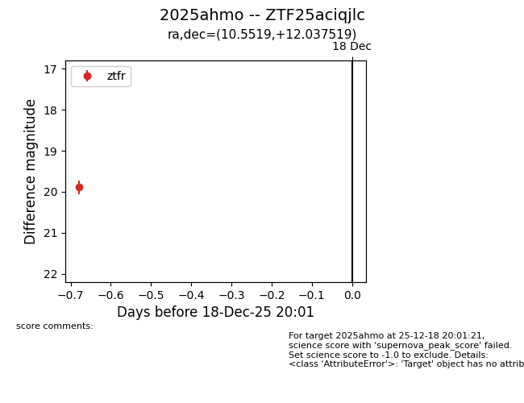
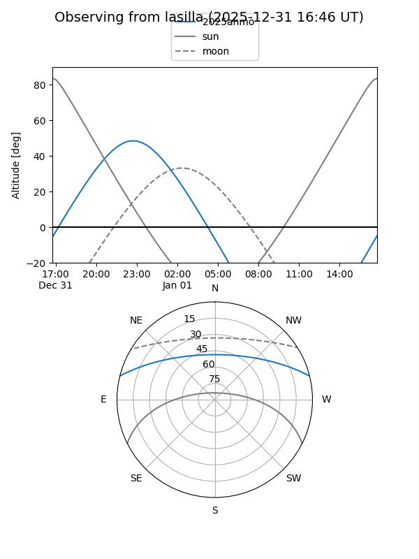
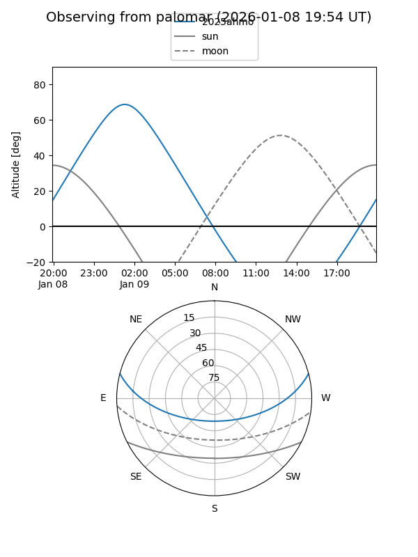

2025ahmo
Target 2025ahmo at 2025-12-31 16:59
Aliases and brokers:
FINK:
Lasair:
ALeRCE:
TNS:
YSE:
alt names
ZTF25aciqjlc (ztf,fink_ztf)
2025ahmo (tns,yse)
Coordinates:
equatorial (ra, dec) = 10.5519,+12.03752
equatorial (HMS+DMS) = 00:42:12.46,+12:02:15.07
galactic (l, b) = (119.3621,-50.77024)
Flags:
Photometry:
last ztfg=19.89, ztfr=20.02
1 ztfg, 3 ztfr detections
Lightcurve

Visibility


Additional plots